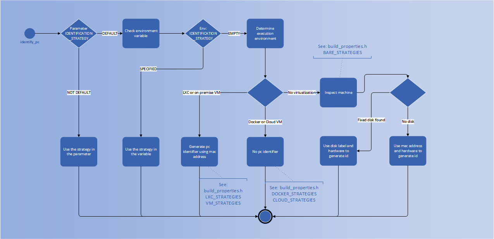

Customize hardware signature generators
PC Identifier generation workflow
The licensed application must call the api method identify_pc to generate an hardware identifier and print it out to the user, the user then will contact the software licensor (you) to get an appropriate license.
The licensed application can either use a specific identification strategy by passing it in the identify_pc parameter hw_id_method
(see: LCC_API_HW_IDENTIFICATION_STRATEGY ) or let licensecc automatically choose a sensible one
(by passing hw_id_method=STRATEGY_DEFAULT). licensecc will select the best identification strategy for the virtual environment the user is running in.
Below the full identifier generation workflow used by the identify_pc method.

Change the hardware identification strategy
Included with the library there are three hardware identification strategies: IP_ADDRESS, STRATEGY_ETHERNET (mac address) and STRATEGY_DISK (partition serial number). If you want to change the strategy that is used to generate the default identifier:
locate the file
licensecc_properties.h(usually inprojects/<$project_name>/include/licensecc/<$project_name>)you can change the order of the strategies in the following code block (the strategies will be tried in sequence until the first one succeeds):
#define LCC_BARE_TO_METAL_STRATEGIES { STRATEGY_DISK, STRATEGY_ETHERNET, STRATEGY_NONE }
#define LCC_VM_STRATEGIES { STRATEGY_ETHERNET, STRATEGY_NONE }
#define LCC_LXC_STRATEGIES { STRATEGY_ETHERNET, STRATEGY_NONE }
#define LCC_DOCKER_STRATEGIES { STRATEGY_NONE }
#define LCC_CLOUD_STRATEGIES { STRATEGY_NONE }
Implement your own hardware signature generator
Extend the following class:
-
class IdentificationStrategy
Abstract class that represent a way to calculate hardware identifiers.
Subclassed by license::hw_identifier::CPUStrategy, license::hw_identifier::DefaultStrategy, license::hw_identifier::DiskStrategy, license::hw_identifier::Ethernet, license::hw_identifier::SystemIdStrategy